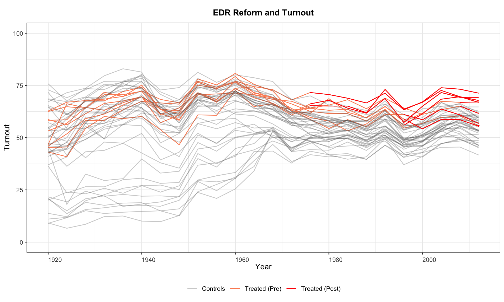
2 Outcome Trajectories
This chapter shows how to plot raw outcome variables as time series, colored by treatment status, using type = "outcome". The syntax is the same as for type = "treat" with type = "outcome" added.
2.1 Basic outcome plot
Turn off pre/post coloring with pre.post = FALSE.
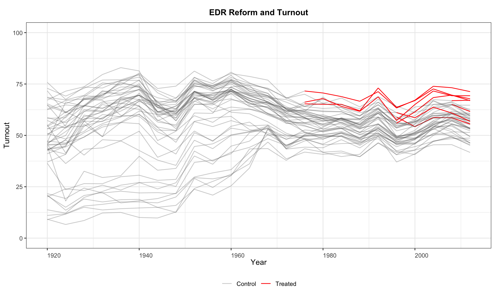
Customise the legend, or suppress it entirely with legendOff = TRUE.
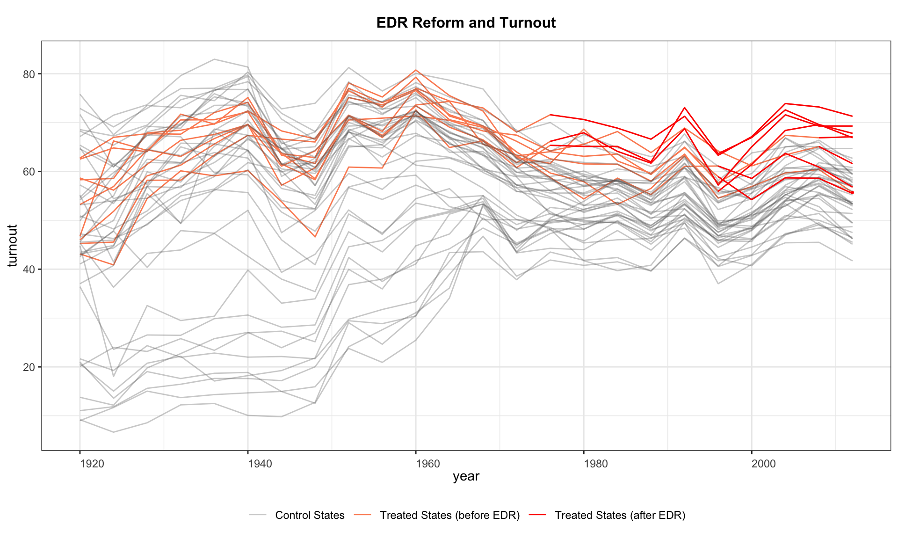
Switch off the black-and-white theme with theme.bw = FALSE.
panelview(turnout ~ policy_edr + policy_mail_in + policy_motor,
data = turnout, index = c("abb", "year"), type = "outcome",
main = "EDR Reform and Turnout", theme.bw = FALSE)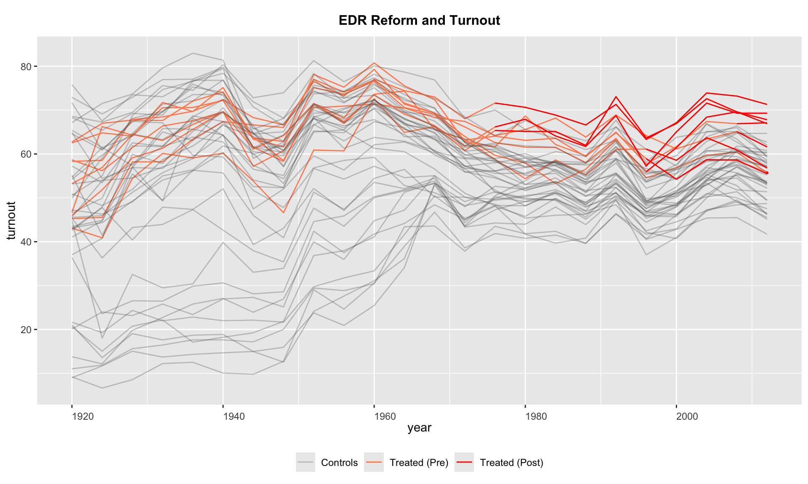
Customise line colors and legend labels simultaneously.
panelview(turnout ~ policy_edr + policy_mail_in + policy_motor,
data = turnout, index = c("abb", "year"),
type = "outcome", main = "EDR Reform and Turnout",
color = c("lightblue", "blue", "#99999950"),
legend.labs = c("Control States",
"Treated States (before EDR)",
"Treated States (after EDR)"))
#> Specified colors in the order of "treated (pre)", "treated (post)", "control".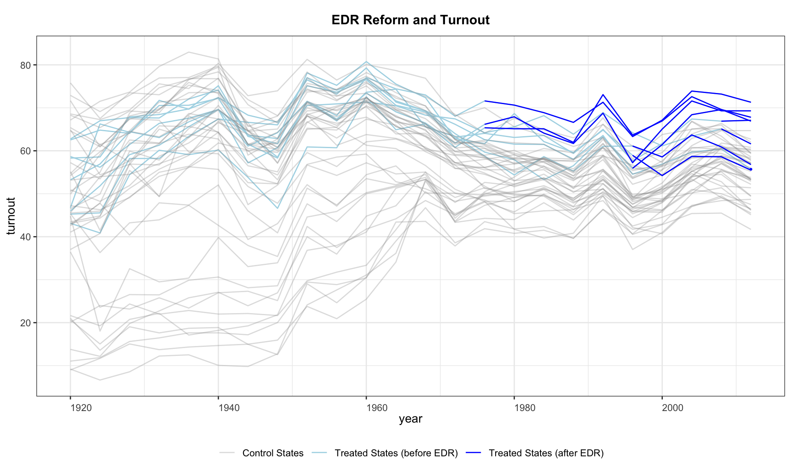
2.2 Plotting a subset of units
Use id to plot only specific units.
2.3 Splitting by treatment-status group
by.group = TRUE separates units into groups based on whether their treatment status ever changed (e.g., always treated, always control, switchers). cex.main and cex.main.sub control title and subtitle font sizes.
panelview(turnout ~ policy_edr + policy_mail_in + policy_motor,
data = turnout, index = c("abb", "year"),
type = "outcome", main = "EDR Reform and Turnout",
by.group = TRUE, cex.main = 20, cex.main.sub = 15)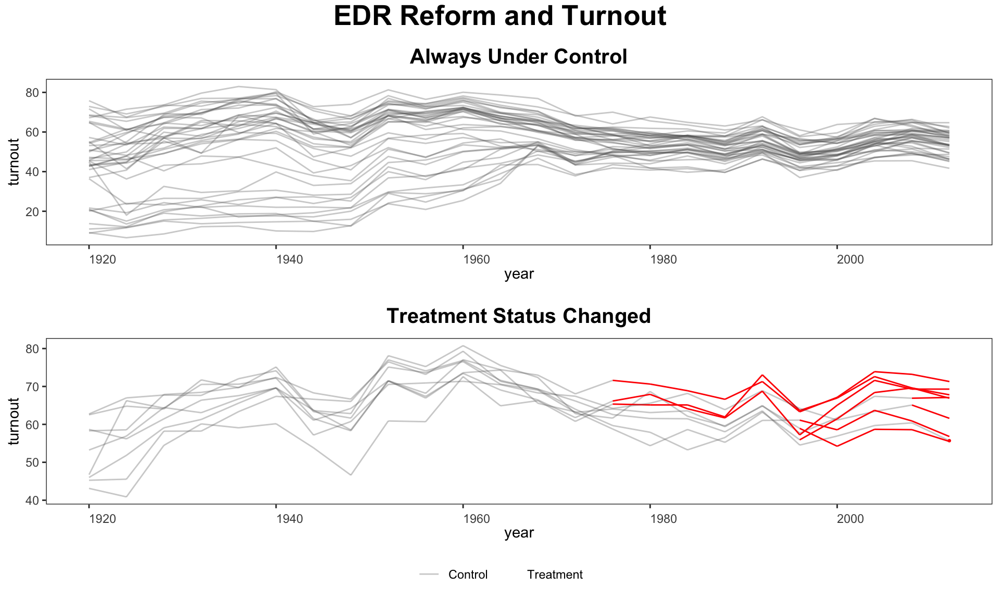
Use by.group.side = TRUE to arrange the subfigures in a row rather than a column.
panelview(turnout ~ policy_edr + policy_mail_in + policy_motor,
data = turnout, index = c("abb", "year"),
type = "outcome", main = "EDR Reform and Turnout",
by.group.side = TRUE, cex.main = 20, cex.main.sub = 15)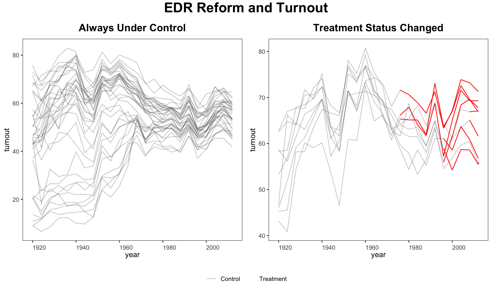
2.4 Cohort-averaged trajectories
by.cohort = TRUE collapses units with identical treatment histories into cohort-average trajectories. This helps diagnose treatment-effect heterogeneity that may bias TWFE estimates.
panelview(turnout ~ policy_edr + policy_mail_in + policy_motor,
data = turnout, index = c("abb", "year"),
type = "outcome", main = "EDR Reform and Turnout",
by.cohort = TRUE)
#> Number of unique treatment histories: 5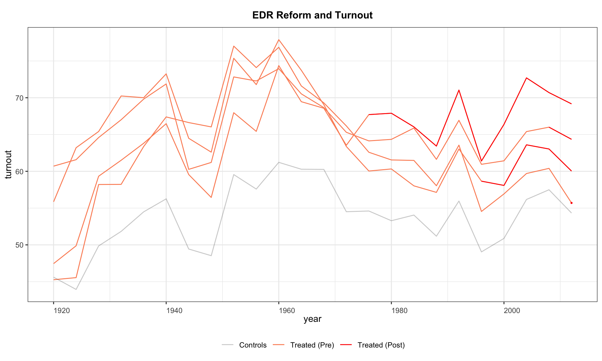
A more detailed cohort plot with custom legend labels and y-axis limits.
panelview(turnout ~ policy_edr + policy_motor,
data = turnout, index = c("abb", "year"), type = "outcome",
main = "EDR Reform and Turnout", by.cohort = TRUE,
ylim = c(40, 80),
legend.labs = c("Control States",
"Treated States (before EDR)",
"Treated States (after EDR)"))
#> Number of unique treatment histories: 5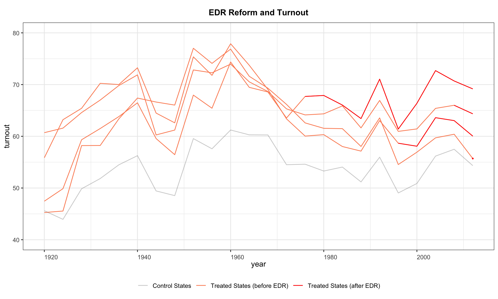
2.5 Ignoring treatment status
Since v1.0.3, omitting the treatment indicator (using Y ~ 1) lets panelView visualize any variable in a panel dataset without reference to treatment.
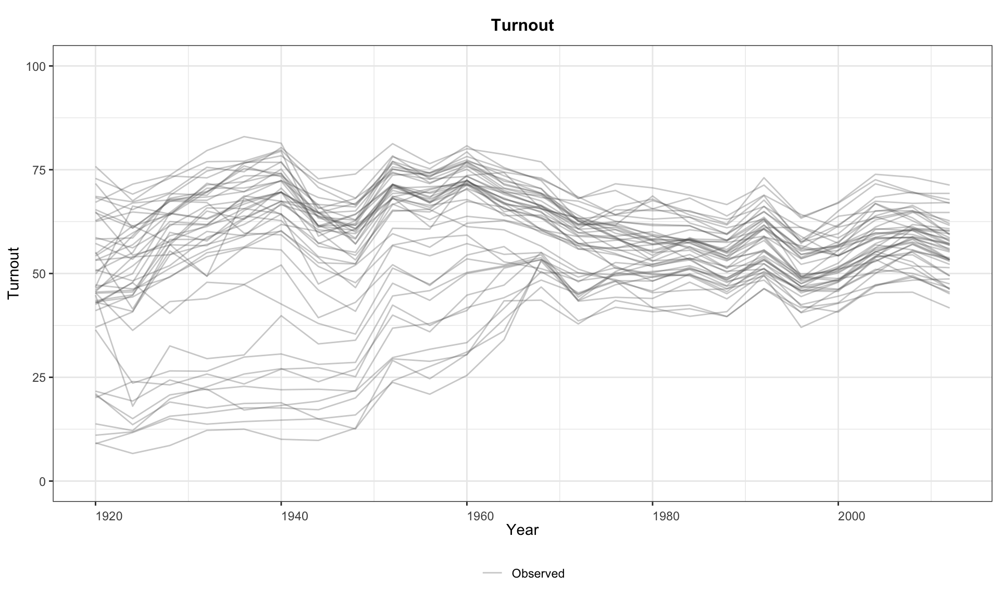
Equivalently, supply the variable name via Y =.
2.6 Discrete outcomes
Set outcome.type = "discrete" when the outcome takes a small number of integer values.
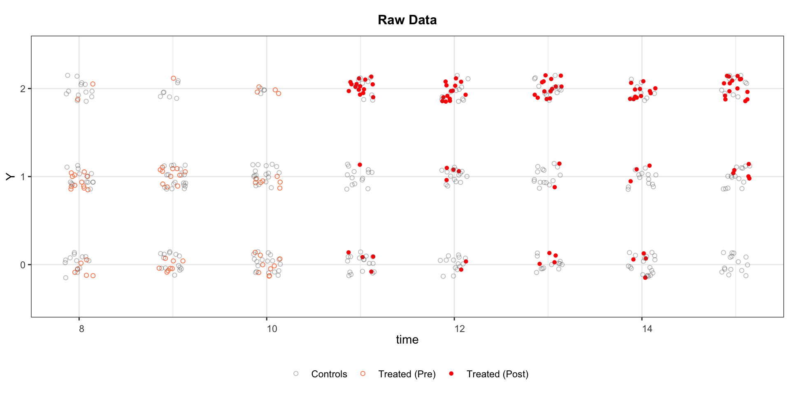
Split by treatment-status group.
2.7 Multi-level or continuous treatment
When the treatment variable has more than 5 unique values (e.g., polity2), treatment status is not shown on the outcome plot.
panelview(Capacity ~ polity2 + lngdp,
data = capacity, index = c("ccode", "year"),
main = "Measuring State Capacity",
type = "outcome", legendOff = TRUE)
#> 21 treatment levels.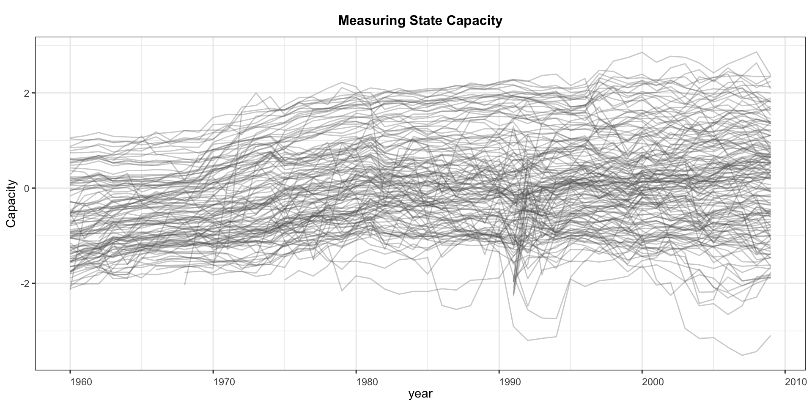